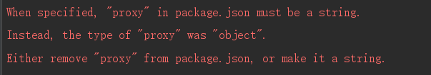

新学习react
开始配置react跨域的时候
在网上查看到是在packjson.json里面添加如下代码：
1 "proxy": {
2 "/api": {
3 "target": "http://localhost:8080"
4 },
5 }
但是启动项目之后报错：

后来在网上查找错误，发现react新版本不支持那样设置反向代理了
新版本做法
安装 http-proxy-middleware
1 npm install http-proxy-middleware --save
2 yarn add http-proxy-middleware
然后创建setupProxy.js文件，在src目录，src/setupProxy.js
setupProxy.js这样写
1 module.exports = function (app) {
2 app.use(proxy('/api',{
3 target: 'http://localhost:8080',
4 changeOrigin: true,
5 pathRewrite: {
6 "^/api": "/"
7 }
8 }))
9 }